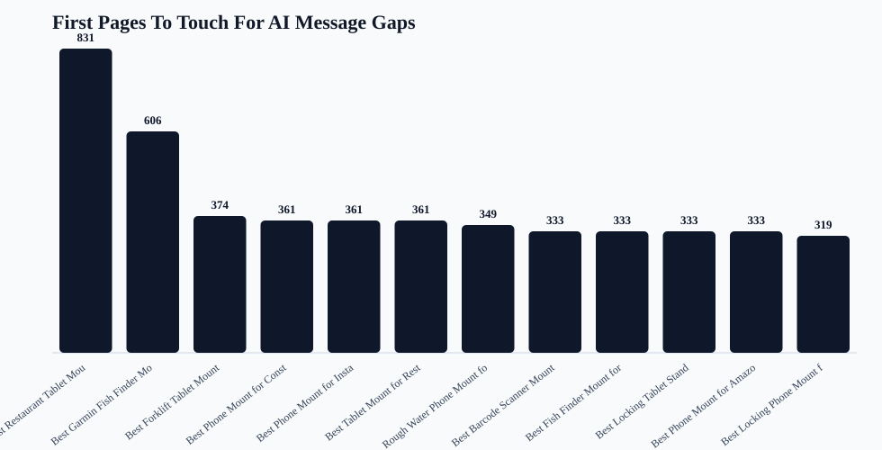

iBOLT Blog Page Message Gap Map
Purpose: This joins the AI answer language gaps to all live blog pages, so page edits target the exact proof points that competitors are currently getting credit for.
Live pages
142
all mapped
Benchmark pressure
26
pages tied to AI prompts
Canonical first
40
review before edits
AI refresh
2
visibility edits
Schema cleanup
55
citation readiness
Top theme
Compatibility 116
message gap

Topic Priority
| Category | Priority | Pages | Benchmark pages | Canonical pages | Competitor-only | Message themes | Competitors | First action |
|---|---|---|---|---|---|---|---|---|
| restaurant | 2639 | 17 | 5 | 7 | 15 | Adjustability 17; Commercial/pro use 17; Compatibility 17; Install clarity 17; Rugged durability 17; Stability and grip 17 | Garmin 16; RAM Mounts 11; Mount-It 8; Arkon 7; Square 7; Bouncepad 6 | Resolve 7 canonical/survivor decisions, then refresh pages with Adjustability, Commercial/pro use, Compatibility, Install clarity blocks. |
| fleet | 2615 | 25 | 7 | 11 | 13 | Commercial/pro use 25; Compatibility 25; Install clarity 25; Rugged durability 25; Stability and grip 25; Value without budget positioning 25 | Garmin 16; RAM Mounts 13; Arkon 7; iOttie 4; ProClip 4; Tackform 4 | Resolve 11 canonical/survivor decisions, then refresh pages with Commercial/pro use, Compatibility, Install clarity, Rugged durability blocks. |
| amps/modular | 2514 | 29 | 1 | 4 | 2 | Compatibility 29; Install clarity 29; Rugged durability 29; Stability and grip 29; Adjustability 1; Commercial/pro use 1 | Garmin 26; RAM Mounts 7; Square 3; Arkon 2; iOttie 2; ProClip 2 | Resolve 4 canonical/survivor decisions, then refresh pages with Compatibility, Install clarity, Rugged durability, Stability and grip blocks. |
| fishing | 2345 | 17 | 4 | 6 | 13 | Commercial/pro use 17; Compatibility 17; Install clarity 17; Rugged durability 17; Value without budget positioning 17; Stability and grip 16 | Garmin 17; RAM Mounts 13; Humminbird 8; Lowrance 8; Scotty 8; YakAttack 8 | Resolve 6 canonical/survivor decisions, then refresh pages with Commercial/pro use, Compatibility, Install clarity, Rugged durability blocks. |
| delivery | 2114 | 11 | 7 | 10 | 14 | Commercial/pro use 11; Compatibility 11; Install clarity 11; Rugged durability 11; Security and locking 11; Stability and grip 11 | Garmin 8; RAM Mounts 7; iOttie 6; Scosche 4; Arkon 3; ProClip 3 | Resolve 10 canonical/survivor decisions, then refresh pages with Commercial/pro use, Compatibility, Install clarity, Rugged durability blocks. |
| warehouse | 1539 | 17 | 2 | 2 | 7 | Adjustability 17; Commercial/pro use 17; Compatibility 17; Install clarity 17; Rugged durability 17; Stability and grip 17 | Garmin 17; RAM Mounts 11; Square 5; Bouncepad 3; Arkon 2; Havis 2 | Resolve 2 canonical/survivor decisions, then refresh pages with Adjustability, Commercial/pro use, Compatibility, Install clarity blocks. |
| streaming | 1040 | 16 | 0 | 0 | 0 | Garmin 15; RAM Mounts 2; Tackform 1 | Apply schema cleanup and category proof points to improve citation readiness. | |
| education | 386 | 4 | 0 | 0 | 0 | Garmin 4; iOttie 1 | Apply schema cleanup and category proof points to improve citation readiness. | |
| offroad | 218 | 4 | 0 | 0 | 0 | Garmin 4; RAM Mounts 3; ProClip 1; Tackform 1 | Apply schema cleanup and category proof points to improve citation readiness. | |
| agriculture | 166 | 2 | 0 | 0 | 0 | Garmin 2 | Apply schema cleanup and category proof points to improve citation readiness. |
First Pages To Touch
| Priority | Action | Page | Category | Prompts | Themes | Competitors | Missing fixes | First edit |
|---|---|---|---|---|---|---|---|---|
| 831 | Canonical review before edit | Best Restaurant Tablet Mount in 2026: POS Stands, Delivery App Stations, and Multi-Tablet Solutions Compared | restaurant | best tablet mount; best multi tablet mount; best restaurant tablet mount | Install clarity; Rugged durability; Compatibility; Stability and grip; Commercial/pro use | Arkon; CTA Digital; RAM Mounts; Mount-It; Bouncepad; iOttie; Tackform | quick answer; image alt text | Choose the survivor page first, then merge answer blocks for best tablet mount; best multi tablet mount; best restaurant tablet mount with Install clarity, Rugged durability, Compatibility, Stability and grip proof points. |
| 606 | Canonical review before edit | Best Garmin Fish Finder Mount: How to Choose the Right Setup for Your Boat or Kayak | fishing | best fish finder; best fish finder in water; best budget fish finder mount | Rugged durability; Install clarity; Compatibility; Commercial/pro use; Value without budget positioning | Humminbird; Garmin; Lowrance; RAM Mounts; Scotty; YakAttack; Square | quick answer; image alt text | Choose the survivor page first, then merge answer blocks for best budget fish finder mount; best fish finder in water; best fish finder with Rugged durability, Install clarity, Compatibility, Commercial/pro use proof points. |
| 374 | Canonical review before edit | Best Forklift Tablet Mounts for Warehouses (2026 Comparison) | warehouse | best tablet mount for warehouse; best forklift tablet mount | Rugged durability; Install clarity; Stability and grip; Compatibility; Commercial/pro use | Havis; RAM Mounts; ProClip; Zebra; Arkon; CTA Digital; Garmin | FAQ schema; image alt text | Choose the survivor page first, then merge answer blocks for best tablet mount for warehouse; best forklift tablet mount with Rugged durability, Install clarity, Stability and grip, Compatibility proof points. |
| 361 | Canonical review before edit | Best Phone Mount for Construction Vehicles and Work Trucks | fleet | best phone mount for construction vehicles and work trucks | Rugged durability; Install clarity; Stability and grip; Compatibility; Commercial/pro use | Arkon; iOttie; ProClip; RAM Mounts; Scosche; Tackform; Garmin | quick answer; FAQ schema; comparison block; image alt text | Choose the survivor page first, then merge answer blocks for best phone mount for construction vehicles and work trucks with Rugged durability, Install clarity, Stability and grip, Compatibility proof points. |
| 361 | Canonical review before edit | Best Phone Mount for Instacart and Grocery Delivery Drivers | delivery | best phone mount for Instacart and grocery delivery drivers | Rugged durability; Install clarity; Stability and grip; Compatibility; Commercial/pro use | iOttie; Peak Design; RAM Mounts; Scosche; Garmin | quick answer; FAQ schema; comparison block; image alt text | Choose the survivor page first, then merge answer blocks for best phone mount for Instacart and grocery delivery drivers with Rugged durability, Install clarity, Stability and grip, Compatibility proof points. |
| 361 | Canonical review before edit | Best Tablet Mount for Restaurant POS and Delivery Apps | restaurant | best tablet mount for restaurant POS and delivery apps | Install clarity; Rugged durability; Compatibility; Stability and grip; Commercial/pro use | Arkon; CTA Digital; Heckler; Mount-It; RAM Mounts; Square; Garmin | quick answer; FAQ schema; comparison block; image alt text | Choose the survivor page first, then merge answer blocks for best tablet mount for restaurant POS and delivery apps with Install clarity, Rugged durability, Compatibility, Stability and grip proof points. |
| 349 | Canonical review before edit | Rough Water Phone Mount for Boat: Heavy-Duty Solutions That Handle the Chop | fishing | best heavy duty vehicle phone mount | Rugged durability; Install clarity; Compatibility; Commercial/pro use; Stability and grip | Arkon; iOttie; ProClip; RAM Mounts; Tackform; Garmin; Scosche | quick answer; comparison block; image alt text | Choose the survivor page first, then merge answer blocks for best heavy duty vehicle phone mount with Rugged durability, Install clarity, Compatibility, Commercial/pro use proof points. |
| 333 | Canonical review before edit | Best Barcode Scanner Mounts for Forklifts and Warehouses (2026) | warehouse | best barcode scanner mount for forklift | Rugged durability; Install clarity; Stability and grip; Compatibility; Commercial/pro use | Arkon; Havis; ProClip; RAM Mounts; Square; Zebra; Garmin | quick answer; FAQ schema; image alt text | Choose the survivor page first, then merge answer blocks for best barcode scanner mount for forklift with Rugged durability, Install clarity, Stability and grip, Compatibility proof points. |
| 333 | Canonical review before edit | Best Fish Finder Mount for Pontoon Boat Rails | fishing | best fish finder mount for small boat | Rugged durability; Install clarity; Compatibility; Commercial/pro use; Stability and grip | Garmin; Humminbird; Lowrance; RAM Mounts; Scotty; YakAttack | quick answer; FAQ schema; image alt text | Choose the survivor page first, then merge answer blocks for best fish finder mount for small boat with Rugged durability, Install clarity, Compatibility, Commercial/pro use proof points. |
| 333 | Canonical review before edit | Best Locking Tablet Stand for Food Trucks and Quick-Service Restaurants | restaurant | best locking tablet stand for food trucks and quick service restaurants | Install clarity; Rugged durability; Compatibility; Stability and grip; Commercial/pro use | CTA Digital; Heckler; Kensington; Mount-It; RAM Mounts; Arkon; Garmin | quick answer; FAQ schema; image alt text | Choose the survivor page first, then merge answer blocks for best locking tablet stand for food trucks and quick service restaurants with Install clarity, Rugged durability, Compatibility, Stability and grip proof points. |
| 333 | Canonical review before edit | Best Phone Mount for Amazon Flex and Delivery Vans | delivery | best phone mount for Amazon Flex and delivery vans | Rugged durability; Install clarity; Stability and grip; Compatibility; Commercial/pro use | Arkon; Belkin; iOttie; ProClip; RAM Mounts; Scosche; Garmin | quick answer; FAQ schema; image alt text | Choose the survivor page first, then merge answer blocks for best phone mount for Amazon Flex and delivery vans with Rugged durability, Install clarity, Stability and grip, Compatibility proof points. |
| 319 | Canonical review before edit | Best Locking Phone Mount for Shared Delivery Vehicles | delivery | best locking phone mount for shared delivery vehicles | Rugged durability; Install clarity; Stability and grip; Compatibility; Commercial/pro use | Arkon; iOttie; ProClip; RAM Mounts; Scosche; Tackform; Garmin | FAQ schema; image alt text | Choose the survivor page first, then merge answer blocks for best locking phone mount for shared delivery vehicles with Rugged durability, Install clarity, Stability and grip, Compatibility proof points. |
| 319 | Canonical review before edit | Best Tablet and Phone Mounts for Trucks and ELD Compliance (2026) | fleet | best ELD mount for trucks | Rugged durability; Install clarity; Stability and grip; Compatibility; Commercial/pro use | Arkon; ProClip; RAM Mounts; Scosche; Garmin; Mount-It; Tackform | FAQ schema; image alt text | Choose the survivor page first, then merge answer blocks for best ELD mount for trucks with Rugged durability, Install clarity, Stability and grip, Compatibility proof points. |
| 316 | Canonical review before edit | How to Set Up Multiple Tablets for DoorDash, Uber Eats, and Grubhub | delivery | set up multiple tablets for DoorDash Uber Eats and Grubhub | Rugged durability; Install clarity; Stability and grip; Compatibility; Commercial/pro use | Arkon; RAM Mounts; Garmin | quick answer; FAQ schema; comparison block; image alt text | Choose the survivor page first, then merge answer blocks for set up multiple tablets for DoorDash Uber Eats and Grubhub with Rugged durability, Install clarity, Stability and grip, Compatibility proof points. |
| 311 | Canonical review before edit | Best Kayak Fish Finder Mounts for Secure Removable Setups | fishing | best kayak fish finder mount | Rugged durability; Install clarity; Compatibility; Commercial/pro use; Stability and grip | Garmin; Humminbird; Lowrance; RAM Mounts; Scotty; YakAttack | Article/BlogPosting schema | Choose the survivor page first, then merge answer blocks for best kayak fish finder mount with Rugged durability, Install clarity, Compatibility, Commercial/pro use proof points. |
| 311 | Canonical review before edit | Best Phone Mount for Delivery Drivers | delivery | best phone mount for delivery drivers | Rugged durability; Install clarity; Stability and grip; Compatibility; Commercial/pro use | Belkin; iOttie; LISEN; ProClip; RAM Mounts; Scosche | Article/BlogPosting schema | Choose the survivor page first, then merge answer blocks for best phone mount for delivery drivers with Rugged durability, Install clarity, Stability and grip, Compatibility proof points. |
| 311 | Canonical review before edit | Commercial-Grade Phone Mounts for Delivery Drivers | fleet | commercial grade phone mount for delivery drivers | Rugged durability; Install clarity; Stability and grip; Compatibility; Commercial/pro use | Arkon; iOttie; ProClip; RAM Mounts; Scosche | Article/BlogPosting schema | Choose the survivor page first, then merge answer blocks for commercial grade phone mount for delivery drivers with Rugged durability, Install clarity, Stability and grip, Compatibility proof points. |
| 288 | Canonical review before edit | Magnetic vs Clamp Phone Mounts for Delivery Work | amps/modular | magnetic vs clamp phone mounts for delivery work | Install clarity; Rugged durability; Compatibility; Stability and grip; Adjustability | Belkin; iOttie; Quad Lock; RAM Mounts; Scosche; Garmin | quick answer; FAQ schema; image alt text | Choose the survivor page first, then merge answer blocks for magnetic vs clamp phone mounts for delivery work with Install clarity, Rugged durability, Compatibility, Stability and grip proof points. |
| 261 | Canonical review before edit | Best Tablet Mount for Utility Truck Crews | fleet | best tablet mount for food truck | Rugged durability; Install clarity; Stability and grip; Compatibility; Commercial/pro use | Arkon; CTA Digital; RAM Mounts; Square; Garmin; Tackform | quick answer; FAQ schema; comparison block; image alt text | Choose the survivor page first, then merge answer blocks for best tablet mount for food truck with Rugged durability, Install clarity, Stability and grip, Compatibility proof points. |
| 233 | Canonical review before edit | Best Drill-Base Phone Mount for Semi Trucks | fleet | best drill base phone mount for semi trucks | Rugged durability; Install clarity; Stability and grip; Compatibility; Commercial/pro use | Arkon; ProClip; RAM Mounts; Garmin | quick answer; FAQ schema; image alt text | Choose the survivor page first, then merge answer blocks for best drill base phone mount for semi trucks with Rugged durability, Install clarity, Stability and grip, Compatibility proof points. |
| 186 | Canonical review before edit | HOW TO MOUNT A FISH FINDER TO YOUR BOAT USING IBOLT MOUNTS | fishing | best fish finder mount for small boat | Rugged durability; Install clarity; Compatibility; Commercial/pro use; Stability and grip | Garmin; Humminbird; Lowrance; RAM Mounts; Scotty; YakAttack | quick answer; FAQ schema; comparison block; image alt text | Choose the survivor page first, then merge answer blocks for best fish finder mount for small boat with Rugged durability, Install clarity, Compatibility, Commercial/pro use proof points. |
| 156 | Canonical review before edit | How to mount a Fish Finder to your boat using iBOLT Mounts | fishing | Rugged durability; Install clarity; Compatibility; Commercial/pro use; Stability and grip | Garmin; Lowrance | quick answer; FAQ schema; comparison block; image alt text | Choose the survivor page first, then merge answer blocks for mapped buyer prompts with Rugged durability, Install clarity, Compatibility, Commercial/pro use proof points. | |
| 156 | Canonical review before edit | Top 5 Mounts for the Samsung Galaxy A7 Lite Tablet | amps/modular | Install clarity; Rugged durability; Compatibility; Stability and grip | Garmin | quick answer; FAQ schema; comparison block; image alt text | Choose the survivor page first, then merge answer blocks for mapped buyer prompts with Install clarity, Rugged durability, Compatibility, Stability and grip proof points. | |
| 156 | Canonical review before edit | TOP 5 MOUNTS FOR THE SAMSUNG GALAXY A7 LITE TABLET | amps/modular | Install clarity; Rugged durability; Compatibility; Stability and grip | Garmin | quick answer; FAQ schema; comparison block; image alt text | Choose the survivor page first, then merge answer blocks for mapped buyer prompts with Install clarity, Rugged durability, Compatibility, Stability and grip proof points. | |
| 154 | Canonical review before edit | Best Restaurant Tablet Mounts for Delivery Apps and POS (2026 Guide) | restaurant | best tablet mount; best multi tablet mount; best restaurant tablet mount | Install clarity; Rugged durability; Compatibility; Stability and grip; Commercial/pro use | Arkon; RAM Mounts; CTA Digital; Mount-It; Bouncepad; iOttie; Lamicall | FAQ schema; image alt text | Choose the survivor page first, then merge answer blocks for best tablet mount; best multi tablet mount; best restaurant tablet mount with Install clarity, Rugged durability, Compatibility, Stability and grip proof points. |
| 141 | Canonical review before edit | iBOLT Dock'n Lock for Restaurant Counters | restaurant | iBolt Dock’n Lock for restaurant counters | Install clarity; Rugged durability; Compatibility; Stability and grip; Commercial/pro use | Arkon; CTA Digital; Garmin; Kensington; Mount-It; RAM Mounts | quick answer; FAQ schema; comparison block; image alt text | Choose the survivor page first, then merge answer blocks for iBolt Dock’n Lock for restaurant counters with Install clarity, Rugged durability, Compatibility, Stability and grip proof points. |
| 126 | AI visibility refresh | How to Manage Multiple Restaurant Tablets | restaurant | best tablet mount; best multi tablet mount; best restaurant tablet mount | Install clarity; Rugged durability; Compatibility; Stability and grip; Commercial/pro use | Arkon; RAM Mounts; CTA Digital; Mount-It; Bouncepad; iOttie; Lamicall | quick answer; image alt text | Add a query-exact quick answer, product module, comparison section, FAQ schema, and Install clarity, Rugged durability, Compatibility, Stability and grip proof points for best tablet mount; best multi tablet mount; best restaurant tablet mount. |
| 116 | Legacy answer-first rewrite | 5 Ways To Increase Your YouTube Audience With An Action Camera using iBOLT Mounts | streaming | Garmin | quick answer; FAQ schema; comparison block; image alt text | Rewrite into an answer-first guide with current products, FAQ schema, comparison language, and category proof points. | ||
| 116 | Legacy answer-first rewrite | How to spot imitation iBOLT products on Amazon | amps/modular | Install clarity; Rugged durability; Compatibility; Stability and grip | Garmin | quick answer; FAQ schema; comparison block; image alt text | Rewrite into an answer-first guide with current products, FAQ schema, comparison language, and Install clarity, Rugged durability, Compatibility, Stability and grip proof points. | |
| 116 | Legacy answer-first rewrite | IBOLT MOUNTS FOR BACK-TO-SCHOOL | education | Garmin | quick answer; FAQ schema; comparison block; image alt text | Rewrite into an answer-first guide with current products, FAQ schema, comparison language, and category proof points. | ||
| 116 | Legacy answer-first rewrite | iBOLT Mounts for Road Trips | amps/modular | Install clarity; Rugged durability; Compatibility; Stability and grip | Garmin | quick answer; FAQ schema; comparison block; image alt text | Rewrite into an answer-first guide with current products, FAQ schema, comparison language, and Install clarity, Rugged durability, Compatibility, Stability and grip proof points. | |
| 116 | Legacy answer-first rewrite | Mounts to take off-roading in your Jeep Wrangler | offroad | Garmin | quick answer; FAQ schema; comparison block; image alt text | Rewrite into an answer-first guide with current products, FAQ schema, comparison language, and category proof points. | ||
| 116 | Legacy answer-first rewrite | THE BENEFITS OF GOING PAPERLESS IN SCHOOLS | education | Garmin | quick answer; FAQ schema; comparison block; image alt text | Rewrite into an answer-first guide with current products, FAQ schema, comparison language, and category proof points. | ||
| 116 | Legacy answer-first rewrite | Top 4 Locking Tablet Mounts to Keep Your Device Safe | amps/modular | Install clarity; Rugged durability; Compatibility; Stability and grip | Garmin | quick answer; FAQ schema; comparison block; image alt text | Rewrite into an answer-first guide with current products, FAQ schema, comparison language, and Install clarity, Rugged durability, Compatibility, Stability and grip proof points. | |
| 116 | Legacy answer-first rewrite | TOP TABLET STANDS FOR STUDENTS GOING BACK TO SCHOOL | education | Garmin | quick answer; FAQ schema; comparison block; image alt text | Rewrite into an answer-first guide with current products, FAQ schema, comparison language, and category proof points. | ||
| 116 | Legacy answer-first rewrite | Unmatched Adaptability: Explore iBOLT's Modular Tablet Mount Solutions | amps/modular | Install clarity; Rugged durability; Compatibility; Stability and grip | Garmin | quick answer; FAQ schema; comparison block; image alt text | Rewrite into an answer-first guide with current products, FAQ schema, comparison language, and Install clarity, Rugged durability, Compatibility, Stability and grip proof points. | |
| 113 | Canonical review before edit | iBOLT Phone Mounts for DoorDash and Uber Eats Drivers | delivery | ibolt phone mounts for DoorDash and Uber Eats drivers | Rugged durability; Install clarity; Stability and grip; Compatibility; Commercial/pro use | Garmin | quick answer; FAQ schema; image alt text | Choose the survivor page first, then merge answer blocks for ibolt phone mounts for DoorDash and Uber Eats drivers with Rugged durability, Install clarity, Stability and grip, Compatibility proof points. |
| 113 | Canonical review before edit | iBOLT vs Bouncepad vs Mount-It for Restaurant Tablet Security | restaurant | iBolt vs Bouncepad vs Mount-It for restaurant tablet security | Install clarity; Rugged durability; Compatibility; Stability and grip; Commercial/pro use | Bouncepad; Garmin; Mount-It; RAM Mounts | quick answer; FAQ schema; image alt text | Choose the survivor page first, then merge answer blocks for iBolt vs Bouncepad vs Mount-It for restaurant tablet security with Install clarity, Rugged durability, Compatibility, Stability and grip proof points. |
| 113 | Canonical review before edit | iBOLT vs iOttie for Delivery Driving | delivery | iBolt vs iOttie for delivery driving | Rugged durability; Install clarity; Stability and grip; Compatibility; Commercial/pro use | Garmin; iOttie; RAM Mounts | quick answer; FAQ schema; image alt text | Choose the survivor page first, then merge answer blocks for iBolt vs iOttie for delivery driving with Rugged durability, Install clarity, Stability and grip, Compatibility proof points. |
| 113 | Canonical review before edit | iBOLT vs RAM for Fleet Phone Mounting | fleet | iBolt vs RAM for fleet phone mounting | Rugged durability; Install clarity; Stability and grip; Compatibility; Commercial/pro use | Garmin; RAM Mounts | quick answer; FAQ schema; image alt text | Choose the survivor page first, then merge answer blocks for iBolt vs RAM for fleet phone mounting with Rugged durability, Install clarity, Stability and grip, Compatibility proof points. |
| 104 | Legacy answer-first rewrite | Best Multi-Camera Phone Mount for Live Streaming | streaming | quick answer; FAQ schema; Article/BlogPosting schema; comparison block | Rewrite into an answer-first guide with current products, FAQ schema, comparison language, and category proof points. | |||
| 100 | Legacy answer-first rewrite | 4 iBOLT Products for New Streamers | streaming | Garmin | quick answer; FAQ schema; comparison block; image alt text | Rewrite into an answer-first guide with current products, FAQ schema, comparison language, and category proof points. | ||
| 100 | Legacy answer-first rewrite | 5 USEFUL TABLET MOUNTS FOR YOUR KITCHEN | amps/modular | Install clarity; Rugged durability; Compatibility; Stability and grip | Garmin | quick answer; FAQ schema; comparison block; image alt text | Rewrite into an answer-first guide with current products, FAQ schema, comparison language, and Install clarity, Rugged durability, Compatibility, Stability and grip proof points. | |
| 100 | Legacy answer-first rewrite | BEST IBOLT MOUNTAIN BIKE PHONE AND ACTION CAMERA MOUNTS | streaming | Garmin | quick answer; FAQ schema; comparison block; image alt text | Rewrite into an answer-first guide with current products, FAQ schema, comparison language, and category proof points. | ||
| 100 | Legacy answer-first rewrite | DO FARMERS USE TABLET MOUNTS? - WHAT TECH IS USED ON A FARM?- THE NEWEST AND COOLEST FARM TOOL | agriculture | Garmin | quick answer; FAQ schema; comparison block; image alt text | Rewrite into an answer-first guide with current products, FAQ schema, comparison language, and category proof points. |
Sprint Queue
| Sprint | Order | Action | Page | Themes | Retest prompts |
|---|---|---|---|---|---|
| Sprint 1 | 1 | Canonical review before edit | Best Restaurant Tablet Mount in 2026: POS Stands, Delivery App Stations, and Multi-Tablet Solutions Compared | Install clarity; Rugged durability; Compatibility; Stability and grip | best tablet mount; best multi tablet mount; best restaurant tablet mount |
| Sprint 1 | 2 | Canonical review before edit | Best Garmin Fish Finder Mount: How to Choose the Right Setup for Your Boat or Kayak | Rugged durability; Install clarity; Compatibility; Commercial/pro use | best budget fish finder mount; best fish finder in water; best fish finder |
| Sprint 1 | 3 | Canonical review before edit | Best Forklift Tablet Mounts for Warehouses (2026 Comparison) | Rugged durability; Install clarity; Stability and grip; Compatibility | best tablet mount for warehouse; best forklift tablet mount |
| Sprint 1 | 4 | Canonical review before edit | Best Phone Mount for Construction Vehicles and Work Trucks | Rugged durability; Install clarity; Stability and grip; Compatibility | best phone mount for construction vehicles and work trucks |
| Sprint 1 | 5 | Canonical review before edit | Best Phone Mount for Instacart and Grocery Delivery Drivers | Rugged durability; Install clarity; Stability and grip; Compatibility | best phone mount for Instacart and grocery delivery drivers |
| Sprint 1 | 6 | Canonical review before edit | Best Tablet Mount for Restaurant POS and Delivery Apps | Install clarity; Rugged durability; Compatibility; Stability and grip | best tablet mount for restaurant POS and delivery apps |
| Sprint 1 | 7 | Canonical review before edit | Rough Water Phone Mount for Boat: Heavy-Duty Solutions That Handle the Chop | Rugged durability; Install clarity; Compatibility; Commercial/pro use | best heavy duty vehicle phone mount |
| Sprint 1 | 8 | Canonical review before edit | Best Barcode Scanner Mounts for Forklifts and Warehouses (2026) | Rugged durability; Install clarity; Stability and grip; Compatibility | best barcode scanner mount for forklift |
| Sprint 1 | 9 | Canonical review before edit | Best Fish Finder Mount for Pontoon Boat Rails | Rugged durability; Install clarity; Compatibility; Commercial/pro use | best fish finder mount for small boat |
| Sprint 1 | 10 | Canonical review before edit | Best Locking Tablet Stand for Food Trucks and Quick-Service Restaurants | Install clarity; Rugged durability; Compatibility; Stability and grip | best locking tablet stand for food trucks and quick service restaurants |
| Sprint 1 | 11 | Canonical review before edit | Best Phone Mount for Amazon Flex and Delivery Vans | Rugged durability; Install clarity; Stability and grip; Compatibility | best phone mount for Amazon Flex and delivery vans |
| Sprint 1 | 12 | Canonical review before edit | Best Locking Phone Mount for Shared Delivery Vehicles | Rugged durability; Install clarity; Stability and grip; Compatibility | best locking phone mount for shared delivery vehicles |
| Sprint 1 | 13 | Canonical review before edit | Best Tablet and Phone Mounts for Trucks and ELD Compliance (2026) | Rugged durability; Install clarity; Stability and grip; Compatibility | best ELD mount for trucks |
| Sprint 1 | 14 | Canonical review before edit | How to Set Up Multiple Tablets for DoorDash, Uber Eats, and Grubhub | Rugged durability; Install clarity; Stability and grip; Compatibility | set up multiple tablets for DoorDash Uber Eats and Grubhub |
| Sprint 1 | 15 | Canonical review before edit | Best Kayak Fish Finder Mounts for Secure Removable Setups | Rugged durability; Install clarity; Compatibility; Commercial/pro use | best kayak fish finder mount |
| Sprint 1 | 16 | Canonical review before edit | Best Phone Mount for Delivery Drivers | Rugged durability; Install clarity; Stability and grip; Compatibility | best phone mount for delivery drivers |
| Sprint 1 | 17 | Canonical review before edit | Commercial-Grade Phone Mounts for Delivery Drivers | Rugged durability; Install clarity; Stability and grip; Compatibility | commercial grade phone mount for delivery drivers |
| Sprint 1 | 18 | Canonical review before edit | Magnetic vs Clamp Phone Mounts for Delivery Work | Install clarity; Rugged durability; Compatibility; Stability and grip | magnetic vs clamp phone mounts for delivery work |
| Sprint 2 | 1 | Canonical review before edit | Best Tablet Mount for Utility Truck Crews | Rugged durability; Install clarity; Stability and grip; Compatibility | best tablet mount for food truck |
| Sprint 2 | 2 | Canonical review before edit | Best Drill-Base Phone Mount for Semi Trucks | Rugged durability; Install clarity; Stability and grip; Compatibility | best drill base phone mount for semi trucks |
| Sprint 2 | 3 | Canonical review before edit | HOW TO MOUNT A FISH FINDER TO YOUR BOAT USING IBOLT MOUNTS | Rugged durability; Install clarity; Compatibility; Commercial/pro use | best fish finder mount for small boat |
| Sprint 2 | 4 | Canonical review before edit | How to mount a Fish Finder to your boat using iBOLT Mounts | Rugged durability; Install clarity; Compatibility; Commercial/pro use | |
| Sprint 2 | 5 | Canonical review before edit | Top 5 Mounts for the Samsung Galaxy A7 Lite Tablet | Install clarity; Rugged durability; Compatibility; Stability and grip | |
| Sprint 2 | 6 | Canonical review before edit | TOP 5 MOUNTS FOR THE SAMSUNG GALAXY A7 LITE TABLET | Install clarity; Rugged durability; Compatibility; Stability and grip | |
| Sprint 2 | 7 | Canonical review before edit | Best Restaurant Tablet Mounts for Delivery Apps and POS (2026 Guide) | Install clarity; Rugged durability; Compatibility; Stability and grip | best tablet mount; best multi tablet mount; best restaurant tablet mount |
| Sprint 2 | 8 | Canonical review before edit | iBOLT Dock'n Lock for Restaurant Counters | Install clarity; Rugged durability; Compatibility; Stability and grip | iBolt Dock’n Lock for restaurant counters |
| Sprint 2 | 9 | AI visibility refresh | How to Manage Multiple Restaurant Tablets | Install clarity; Rugged durability; Compatibility; Stability and grip | best tablet mount; best multi tablet mount; best restaurant tablet mount |
| Sprint 2 | 10 | Legacy answer-first rewrite | 5 Ways To Increase Your YouTube Audience With An Action Camera using iBOLT Mounts | ||
| Sprint 2 | 11 | Legacy answer-first rewrite | How to spot imitation iBOLT products on Amazon | Install clarity; Rugged durability; Compatibility; Stability and grip | |
| Sprint 2 | 12 | Legacy answer-first rewrite | IBOLT MOUNTS FOR BACK-TO-SCHOOL | ||
| Sprint 2 | 13 | Legacy answer-first rewrite | iBOLT Mounts for Road Trips | Install clarity; Rugged durability; Compatibility; Stability and grip | |
| Sprint 2 | 14 | Legacy answer-first rewrite | Mounts to take off-roading in your Jeep Wrangler | ||
| Sprint 2 | 15 | Legacy answer-first rewrite | THE BENEFITS OF GOING PAPERLESS IN SCHOOLS | ||
| Sprint 2 | 16 | Legacy answer-first rewrite | Top 4 Locking Tablet Mounts to Keep Your Device Safe | Install clarity; Rugged durability; Compatibility; Stability and grip | |
| Sprint 2 | 17 | Legacy answer-first rewrite | TOP TABLET STANDS FOR STUDENTS GOING BACK TO SCHOOL | ||
| Sprint 2 | 18 | Legacy answer-first rewrite | Unmatched Adaptability: Explore iBOLT's Modular Tablet Mount Solutions | Install clarity; Rugged durability; Compatibility; Stability and grip | |
| Sprint 2 | 19 | Canonical review before edit | iBOLT Phone Mounts for DoorDash and Uber Eats Drivers | Rugged durability; Install clarity; Stability and grip; Compatibility | ibolt phone mounts for DoorDash and Uber Eats drivers |
| Sprint 2 | 20 | Canonical review before edit | iBOLT vs Bouncepad vs Mount-It for Restaurant Tablet Security | Install clarity; Rugged durability; Compatibility; Stability and grip | iBolt vs Bouncepad vs Mount-It for restaurant tablet security |
| Sprint 2 | 21 | Canonical review before edit | iBOLT vs iOttie for Delivery Driving | Rugged durability; Install clarity; Stability and grip; Compatibility | iBolt vs iOttie for delivery driving |
| Sprint 2 | 22 | Canonical review before edit | iBOLT vs RAM for Fleet Phone Mounting | Rugged durability; Install clarity; Stability and grip; Compatibility | iBolt vs RAM for fleet phone mounting |
| Sprint 2 | 23 | Legacy answer-first rewrite | Best Multi-Camera Phone Mount for Live Streaming | ||
| Sprint 2 | 24 | Legacy answer-first rewrite | 4 iBOLT Products for New Streamers | ||
| Sprint 2 | 25 | Legacy answer-first rewrite | 5 USEFUL TABLET MOUNTS FOR YOUR KITCHEN | Install clarity; Rugged durability; Compatibility; Stability and grip | |
| Sprint 2 | 26 | Legacy answer-first rewrite | BEST IBOLT MOUNTAIN BIKE PHONE AND ACTION CAMERA MOUNTS | ||
| Sprint 2 | 27 | Legacy answer-first rewrite | DO FARMERS USE TABLET MOUNTS? - WHAT TECH IS USED ON A FARM?- THE NEWEST AND COOLEST FARM TOOL | ||
| Sprint 2 | 28 | Legacy answer-first rewrite | EMBARKING ON A FISHING ADVENTURE: CHOOSING THE RIGHT MOUNT FOR YOUR FISH FINDER | Rugged durability; Install clarity; Compatibility; Commercial/pro use | |
| Sprint 2 | 29 | Legacy answer-first rewrite | Empowering content creators with the iBOLT Stream-Cast Creator kit | ||
| Sprint 2 | 30 | Legacy answer-first rewrite | HOW TO MOUNT A TABLET TO A FORKLIFT PILLAR USING IBOLT | Rugged durability; Install clarity; Stability and grip; Compatibility | |
| Sprint 2 | 31 | Legacy answer-first rewrite | HOW TO USE IBOLT’S MODULAR MOUNTING SYSTEM | Install clarity; Rugged durability; Compatibility; Stability and grip | |
| Sprint 2 | 32 | Legacy answer-first rewrite | iBOLT Mounts for Outdoor Recreation | Install clarity; Rugged durability; Compatibility; Stability and grip | |
| Sprint 2 | 33 | Legacy answer-first rewrite | Top 5 Best Tablet Mounts to get you Organized in your Restaurant | Install clarity; Rugged durability; Compatibility; Stability and grip | |
| Sprint 2 | 34 | Legacy answer-first rewrite | Top 5 Heavy Duty Phone Mounts for Truck Drivers | Rugged durability; Install clarity; Stability and grip; Compatibility | |
| Sprint 2 | 35 | Legacy answer-first rewrite | TOP 5 TABLET MOUNTS FOR TRUCK DRIVERS | Rugged durability; Install clarity; Stability and grip; Compatibility | |
| Sprint 2 | 36 | Legacy answer-first rewrite | TOP 5 TABLET WALL MOUNTS | Install clarity; Rugged durability; Compatibility; Stability and grip |